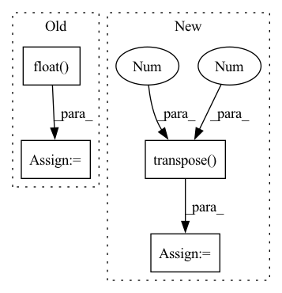

Pattern ID :17137
Before Change
// Compute the positional encodings once in log space.
pe = torch.zeros(max_len, d_model, requires_grad=False)
position = torch.arange(0, max_len).unsqueeze(1).float()
div_term = torch.exp(torch.arange(0, d_model, 2).float() * -(math.log(10000.0) / d_model))
pe[:, 0::2] = torch.sin(position * div_term)
pe[:, 1::2] = torch.cos(position * div_term)
pe = pe.unsqueeze(0)
self.register_buffer("pe", pe)
def forward(self, input):After Change
pe[:, 0::2] = torch.sin(position * div_term)
pe[:, 1::2] = torch.cos(position * div_term)
// pe = pe.unsqueeze(0).transpose(0, 1) // seq_len, batch, channels
pe = pe.transpose(0 , 1 ) .unsqueeze(0) // batch, channels, seq_len
self.register_buffer("pe", pe)
In pattern: SUPERPATTERN
Frequency: 4
Non-data size: 4
Instances Fragment ID: 57274856
Project Name: zhongyang-debug/attention-is-all-you-need-in-speech-separation
Commit Name: 361486e2e14685189e9a65a81fa779b4728c6e18
Time: 2022-08-16
Author: 68770882+Zhongyang-debug@users.noreply.github.com
File Name: model/sepformer.py
M Class Name: Positional_Encoding
N Class Name: Positional_Encoding
M Method Name: __init__(4)
N Method Name: __init__(3)
M Parent Class: nn.Module
N Parent Class: nn.Module
M File Name: model/sepformer.py
N File Name: model/sepformer.py
M Start Line: 121
M End Line: 125
N Start Line: 125
N End Line: 137
Before Change
track.chunk_start = start
track.chunk_duration = duration
target = track.targets[self.target].audio.transpose(1, 0)
target = torch.Tensor(target).float()
if self._is_active(target, threshold=self.threshold):
data = {
"songID": songID,After Change
for songID, track in enumerate(self.mus.tracks):
if set(self.sources) == set(__sources__):
mixture = track.audio.transpose(1 , 0 )
else:
sources = []
for _source in self.sources:
sources.append(track.targets[_source].audio.transpose(1, 0)[np.newaxis]) Fragment ID: 57274745
Project Name: tky823/dnn-based_source_separation
Commit Name: b7a22e8f24f8206fc28ef8b7f01f01fcce0a498c
Time: 2021-08-10
Author: 40362510+tky823@users.noreply.github.com
File Name: egs/musdb18/conv-tasnet/src/adhoc_dataset.py
M Class Name: WaveTrainDataset
N Class Name: WaveTrainDataset
M Method Name: __init__(8)
N Method Name: __init__(8)
M Parent Class: WaveDataset
N Parent Class: WaveDataset
M File Name: egs/musdb18/conv-tasnet/src/adhoc_dataset.py
N File Name: egs/musdb18/conv-tasnet/src/adhoc_dataset.py
M Start Line: 91
M End Line: 117
N Start Line: 83
N End Line: 98
Before Change
else: // cmap: [256, 3|4] uint8
assert isinstance(cmap, torch.Tensor) and cmap.shape[0] == 256
heatmap = cmap[(heatmap * 255).long()].transpose(1, 3).transpose(2, 3)
heatmap = heatmap.float() / 255
// Note that C==4 for most cmaps
heatmap = torch.as_tensor(heatmap.transpose(0, 3, 1, 2)) // (N, C, H, W)
return heatmap[0] if squeeze_flag else heatmapAfter Change
cmap = torch.as_tensor(cmap)
assert cmap.shape[0] == 256 // cmap: [256, 3|4]
heatmap = cmap[(heatmap * 255).long()] // (N, H, W, C) uint8
heatmap = heatmap.transpose(1, 3).transpose(2 , 3 ) .float() // (N, C, H, W)
heatmap = heatmap / 255 if heatmap.max() > 1 else heatmap // (N, C, H, W) float
return heatmap[0] if squeeze_flag else heatmap
Fragment ID: 57274858
Project Name: ain-soph/trojanzoo
Commit Name: 80e74988c8d77c00322fd1144f83d6ff4e5ee2cb
Time: 2020-12-31
Author: ain-soph@live.com
File Name: trojanvision/utils/__init__.py
M Class Name: AnonimousClass
N Class Name: AnonimousClass
M Method Name: apply_cmap(2)
N Method Name: apply_cmap(2)
M Parent Class:
N Parent Class:
M File Name: trojanvision/utils/__init__.py
N File Name: trojanvision/utils/__init__.py
M Start Line: 14
M End Line: 27
N Start Line: 15
N End Line: 29
Before Change
//print(img.shape[:2])
img = img.transpose(2, 0, 1)
img = torch.from_numpy(img).to(self.device)
img = img.float() // uint8 to fp16/32
img /= 255.0 // 0 - 255 to 0.0 - 1.0
if img.ndimension() == 3:
img = img.unsqueeze(0)
return imgAfter Change
img = letterbox(img, new_shape=imgsz)[0]
pp_imgs.append(img)
pp_imgs = np.array(pp_imgs)
pp_imgs = pp_imgs.transpose( 0, 3 , 1, 2 )
pp_imgs = torch.from_numpy(pp_imgs).to(self.device)
pp_imgs = pp_imgs.float() // uint8 to fp16/32
pp_imgs /= 255.0 // 0 - 255 to 0.0 - 1.0
return pp_imgs Fragment ID: 57274860
Project Name: elyha7/yoloface
Commit Name: 794e25df420f25fd7937e0af41fefd7bf184fad6
Time: 2022-01-10
Author: artemrebrikov@gmail.com
File Name: face_detector.py
M Class Name: YoloDetector
N Class Name: YoloDetector
M Method Name: _preprocess(2)
N Method Name: _preprocess(2)
M Parent Class:
N Parent Class:
M File Name: face_detector.py
N File Name: face_detector.py
M Start Line: 67
M End Line: 83
N Start Line: 66
N End Line: 82